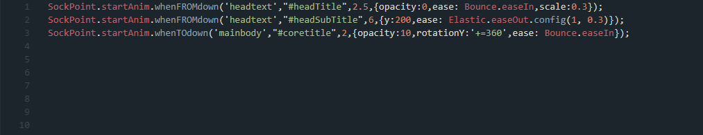

Easily animate your elements as soon as you scroll in to focus

As one of the founders of the lazy coders Club i've build a
small but effective library that allows you to trigger GSAP's TweenMax.to(),
TweenMax.from() and TweenMax stagger Methods when you scroll to a given ID.